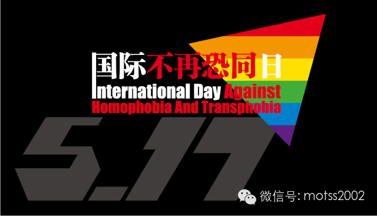
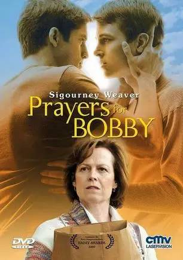
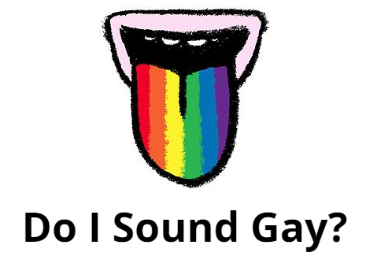
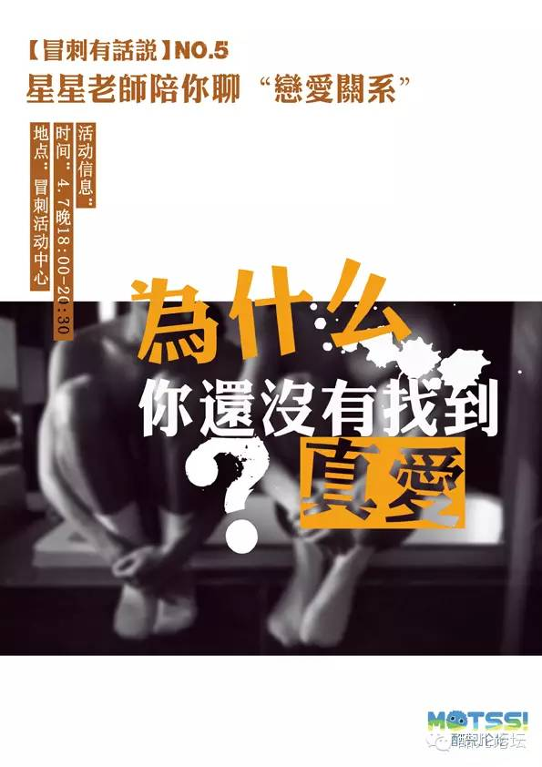
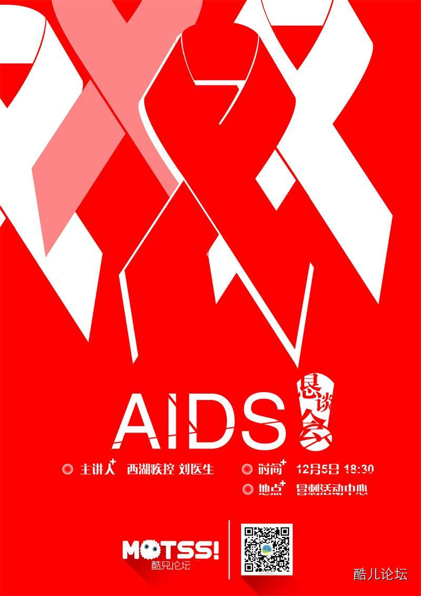

重磅 | 新生同志问题指南
” Queer as Freshmean 今天是浙大新生报道的日子，很多在杭高校也即将迎来新生。无论你是杭州本地土著，还是来自其他县市、省份，都意味着你将进入一个全新的生活状态和社交圈。欢迎各位，尤其是作为性少数的你。 这份“指南”成文于2013年，里面有小部分内容可能会跟不上同志群体飞快的变化（比如社交方式里淡蓝、飞赞都已经被小蓝小红取代了），但是对于满满期待着大学“同志校园生活”的你来说，绝大多数内容都值得你品味一番。 当然，如果你是一个“太长不看”的懒汉，我们在文末给你提供了一个精简版+新寄语；但也别希望自己能够抱着这种懒汉的态度在大学里好好混下去（此处有个大白眼和一把辛酸泪）。 | ▼ |
新生同志问题指南 |
作者：烟玉暖阳 kiokio 编辑：Owen旭
首发在《Togayther基调》
同性恋既不是病也不是心理问题，作为一种性取向，一直贯穿在人类社会的发展当中。由于不同阶段人类对于事物认知能力的不同，出于不同的原因（家庭背景、教育、宗教等等），使得一些人不能了解和认识同性恋，对同性恋的认识不尽相同。然而在医学界早已达成共识，1997 年，美国心理学会表示，人类不能选择作为同性恋或异性恋，而人类的性取向不是能够由意志改变的有意识的选择。同性恋不是一种疾病，因此也没有必要进行治疗，而且也是不能改变的。2001我国将同性恋从精神疾病的分类当中去除。
同性恋，它是指一个人持久性的对同性产生情感、浪漫和性的吸引，无论这样的吸引是否从外显行为中表露出来。性取向不是评估或是鉴定一个人的标准，亦不应该被标签化。就像异性恋当中有各种不同的个体一样，同性恋也存在着许许多多截然不同的个体，你是一个什么样的人，只有你自己说了算。

（每年的5月17日是“国际不再恐同日”，为纪念WHO将同性恋去病化）
MOTSS
观点
在关于“恋向”和“性向”的定义和判定中，我们应当是概念的塑造者，而不是概念的顺从者。任何一个人都只符合传统意义上男性标准的某一些， 同时也会符合传统意义上女性标准的某一些。这些捉摸不定又变化无常的文化意义上的“性别准则”不应成为束缚我们行为的标尺，尤其是在不涉及当代关于“善”、“恶”的普适认知标准之时。
从相对的角度而言，我们确实和“异性恋”不同，但并不意味我们不正常，更不意味着我们需要背负心理负担和任何意义上的罪恶感。在生与死、爱与被爱、享受权利和承担义务上，世界上的每一个人都应当是平等的，如果现实中存有不平等，那并不是我们的错。
我们都会有自己的友情、亲情等等，在情感中我们都渴望得到别人的认同，相应的应该给别人了解自己的机会。一个人是否认可你与你的性取向并无关系，只有彼此信任和沟通才是让一个人认同你支持你的方法。但是告知的对象应该是有选择性和目的性的，遵循友善为原则，需要根据不同的情况量力而行，没有必要告诉所有人。
从自己的亲密朋友，或者同年龄、同辈的人入手，相对容易获得他们的了解和认同，因为他们更容易接触和了解涉及同性恋的信息。如果你清楚ta 对同性恋的态度，你们可以先试着讨论与此相关的话题，例如同性恋题材的电影、某些最近出柜的明星。或许这是考验你们情感是否真实的一种方式，只有真正的感情，才禁得住风吹雨打。
也许你身处的环境和你周围的人不能以平等、包容的眼光同性恋，对此没有必要恐慌，因为人的认知水平是在不断发展的，而只要你不说就不会有人知道。这并不是说公开性取向不好，而是要基于自身环境考量，不急于公开是为了避免一些不必要的麻烦。你也可以通过努力改变自己的生活环境和周围的人让自己活得更好。
出柜，就是公开自己的性取向，而这里的出柜，就是向父母公开自己的性取向。父母作为上一辈人，对同性恋的认识可能不如我们。你要相信，真正爱你的父母比任何人都能接受你，他们只是多了一些担心，担心你的养老、健康等等。其实对父母对父母出柜并没有传闻中的那么难，只要父母开明、方法的当，跟父母出柜反而是一件很轻松的事，一般情况下只要你有独立生活的能力，就可以向父母出柜，而你要做就是想他们证明你有能力去用自己的方式得到幸福。跟父母出柜的方式有很多，比如写信或者面谈都可以，前提是需要跟父母有良好的沟通和融洽的关系，如果没有不妨先从次做起，让父母多感受到你的爱，主动关心一下他们，他们也会更主动的了解你，作为铺垫，要有意识的父母观看和了解关于同性恋的资料。对此一位同志母亲言简意赅的总结出跟父母出柜的经验：循序渐进，坚持不懈。此外全国各地也已经有越来越多地同志父母站出来支持自己的同性恋子女，在网络上可以轻松的找到他们，参与到他们交流中也可以获得很多有用的帮助。

（著名电影《天佑鲍比》，讲述了一个基督徒母亲如何接受他儿子的性取向并参与到同志维权事业中的故事）
有少数父母会因为一时半会的不理解，而考虑将自己的孩子送到所谓的同性恋矫正机构，早在1990 年世界卫生组织就已经将同性恋从精神疾病的分类中去除了，任何声称改变或者“治愈”同性恋都是违背医学常识的，在我国有些居心不良的人利用大部分人对于同性恋不了解的心理大肆行骗，给同性恋者和他们的家人带来巨大的伤害。如果你遇到了，首先要坚定自己的态度——同性恋是不能被“矫正”地，不同时要慌张，向工商、卫生部门举报，亦可以求助社群组织和机构。
MOTSS
观点
我们并不建议你盲目出柜，认同和接受自己的某个特征并不等同于要把这个特征公之于众。事实上，除了性取向，我们每个人身上都有诸多的秘密和特征，你可以自由选择是否公之于众或者告诉哪些人，衡量的标准在于：这个特征的暴露是否具有一定的危险性。就现有的出柜经验来看，越是向与自己没有直接利害关系的人出柜越是安全的，向家人出柜则风险系数较高。而且基于每个人的生活环境和面临人群的成分不同，他人的出柜经验并没有办法完全照搬，只能部分借鉴，如果你选择出柜，请一定要做足功课，衡量各种可能存在的危险，多像前辈求教，并且确保自己在人格和经济上已经独立了——万一你父母断了你的生活费，你得想好怎么解决。当然，出柜也并非没有好处，从个人的角度而言，你可以在你在乎的人面前站立起来，与你最亲近的人分享你的秘密，以自己喜欢的方式生活，从群体的角度而言，可以促使群体外的人对我们的即有偏见发生改变，让同志议题更加公开化。
通过手机、计算网络可以轻松发现和你一样的人，很多城市也有专门的同性恋主题酒吧提供交流的机会。同时越来越多的社群机构和组织也开始组织线下的聚会，借此交流经验，相互帮助同时更好的认同自己。在你成长的同时，建立自己的生活。这里的生活可不只是吃饭睡觉，而是属于你自己的东西，可以是一种兴趣或者一种爱好，可以是一种让你投身的工作。通过生活去了解和认识一个人，而后有共同语言，是培养情感有效的方式。除此之外，要如何维系人与人之间的情感，因为不同的人在情感当中所需求的东西是不同的，所以这个问题只有交给你自己解答了。
牢记，同性恋也是这个社会的组成部分，也会有这个社会的善恶美丑。
MOTSS
观点
建议首先是找到同志群体组织，无论你是否喜欢社交，有几个能够交心的同志朋友多少是对你生活的方方面面有所助益的。随着网络社群的发达，国内也有大大小小各种各样的同志社区，比如MOTSS、淡蓝、飞赞、左右电台等等，上面有各种各样关于情感、性爱、同志权益等方面的知识，也会有各种各样的线下活动，你应该试着去了解和融入。一种普遍存在于刚刚接触这个群体的不良心态是：觉得同志圈很乱很脏，我应该避而远之，觉得自己从来不接触同性恋群体就很“干净”很“靠谱”。
但事实上，“性向”和“恋向”只是一个人的诸多特征中的一个，这个特征并不能决定一个人是“脏”还是“干净”，正如异性恋也有流氓、艾滋病传播者和性滥交者一样，同性恋群体也有阳光、积极、奋发的人群，我们并不能把自己对同性恋的自我不认同推之到整个群体，更不能因为别人的性向去判定别人的人格，否则你要别人如何判定你？我们看到很多成功、开朗又爱情美满的人，不管是同性恋还是异性恋，他们身上总有一些共同的特质，那就是懂得悦纳自己，有志趣相投的朋友，不因自己“与众不同”而自怨自艾。

（酷儿论坛举办的2015新年聚会）
歧视，是指人对人就某个缺陷、缺点、能力、出身以不平等的眼光对待。事实上在我国，还没有专门的反歧视法律，因此当你遇到那些对你不友善的人，可能会受到显性或者隐性的伤害，或者不公平的对待。对此，这里以人身安全为最高前提，尽可能的保护自己的人身安全和自己的隐私，对于这些情况社群里不少组织和机构歧视都有各自应对的方法，必要时可以求助他们，也可以向那些支持自己的人求助，给那些为所欲为的人一个教训。同时在我国关于名誉损害是有相关立法的，通过法律也是解决问题的方式之一。
牢记，只有自己强大了才能保护自己。
不止是有异性恋在歧视性少数人群，性少数人群内部也有歧视，这就是现在的状况。同性恋看不起双性恋，嫌他们两边倒、“花心”；阳刚的男同看不起阴柔的男同，嫌他们“不是男人”；性方式“常规”的看不起SM 族群，嫌他们“重口味”；不出来活动的同志看不起活动频繁的同志，嫌他们“乱”……长得胖、动作娘、穿着土、年纪大、学历低、相貌平平、爱好特殊、感染疾病等等，都可能成为某些人对其他人进行道德评判的理由，“胖子勿扰”、“娘炮滚开”等等似乎已经成同志征友的必备台词。当这个群体内部就已经歧视不断，还如何去向群体之外呼吁“反歧视”？

(纪录片《Do I Sound Gay》探讨了同志群体内部被男权主义综合症）
我们不可否认， 某些人对某些事物存在着“厌恶”，不管这种情绪是与身俱来的，还是习得的，还是纯粹因为别的莫名其妙的原因（人云亦云，不持有同样的情感就会被当成“异类”）。一个平等自由的社会意味着，每个人都有权利表达自己的观点、决定自己的行动，只要你没有伤害到他人，就不应该被干涉。我们不能强迫反同者都微笑着来一张“同志，你好！”，不可能以“每一个同性恋者都应该是反歧视先锋”道德审判而要求所有的同志都对边缘同志（例如以上所列举的）敞开怀抱。人们固然有权利表达自己的“厌恶”，并且这种权利应该被保护。但在表达时请注意场合和方式。“良言一句三冬暧，恶语一句三伏寒。”“恶心”“变态”和“不喜欢”是完全不同的表达效果，在私人场合说和在公共场合说也是不同的效果。将个人好恶上升为道德评判标准，对自己所不喜欢的大加鄙夷、区别对待，这将造成对另一个群体的伤害。“已所不欲，勿施于人。”请思考这样的问题：如果不想别人歧视你，那么你是否能做到不歧视别人？
美国史上同性恋者首次反抗——石墙暴动中第一个站出来的正是一位变装皇后（Drag Queen），早期同志游行队伍中走在最前端的也多半是“花枝招展的娘娘腔”。现在我们羡慕西方国家有了各种保证性少数人群法律、同志群体有了更多的平等权利，另一方面却又对同志群体中性别不符于传统的人群加以排挤、批判，以所谓“树造同志群体阳光形象”的名义将他们驱逐。固然，由于过去一些影视作品的片面塑造，在普通人群中形成了男同性恋“娘娘腔”、女同性恋“爷们儿”的刻板印象，然而同志群体中这样的内部排挤只会是矫枉过正、本末倒置。
人们对于同性恋的人是是不断变化的，就像同性婚姻也经历了从无到有，从少到多。目前世界上有近四分之一的国家承认同性伴侣关系（同性婚姻、民事结合等）。尽管在我国，这项工程才刚刚起步，它的推动需要大家的努力，迟早有一点你能过上你向往的生活。关于生育和养老的问题现有的技术手段完全可以解决对此完全不需要多虑。
爱情并不是一个人生活的全部，我们需要感情，也需要独立于世的能力，这些都是构成我们一生密不可分的整体，因此没有必要去把自己的性取向与自我割裂开来，接纳自己，勇敢做自己，当爱情来到的时候勇敢抓住，当爱情还没来的时候，就努力让自己变得更优秀。
也许你遭遇了失恋，也许会有人以“过来人”的口吻告诉你同性恋没有真爱。那么真爱的标准到底是什么呢？本来就没有唯一的答案，又何必一定要去讨论一个非黑即白的结果。在我国，同性恋社群真正形成规模不到20 年的时间，，有很多东西都不如异性恋社群来的完善。就拿相处的模式来说吧，很多人都是在网上相互认识，然后就开始以伴侣的模式相处，而跳过了一个相互深入了解和沟通的过程，这样很可能会导致在亲密关系当中发生一些磕磕绊绊，分手也是不可避免的。所谓错误的爱情观必然会导致失败的爱情，显然同性恋没有真爱这种说法是以偏概全了。
其实在社群里，共同生活了10 年乃至20 年的伴侣比比皆是，乃至到了70 岁的老同志还依然可以沉浸在爱的喜悦当中。爱情作为一种高尚的情感可以存续在任何空间时间里，前提是能为止努力。所以不要担心有没有真爱，也不要担心付出了没有回报，只要你努力让自己强大起来，就可以去捍卫属于你的幸福。

（酷儿论坛举办的恋爱讲座）
这里的直人就是指异性恋，尽管在一些场合有人声称把直人给掰弯了，这不排除被掰弯的人本身就是同性恋或者双性恋，并不是所有人都能接受，就像每个人都有自己特定的喜好，不是自己喜好的东西自然不会很感兴趣。尤其是对暗恋的直人而言，如果你真的想要跟他表达你爱意，一定要考虑他能不能接受，不然他知道以后可能岁损害你们的关系哦。还有一种情况，是无法区分两个人究竟是不是爱情。也许，只有时间才能给出答案了。
恭喜你，你已经可以吸引到别人了，然而要开始一段亲密关系，是需要考虑两个事实，一是你能不能承担两个人在一起的责任，二是你们能否从这样的亲密关系中获益。追你的人有很多，追你的目的也有很多，加以甄别才是最重要的，切记，这里依然是以人身安全为最高标准，至于能不能走下去，还要靠你们两个人一起努力了。
MOTSS
观点
感情并不是性愉悦的必备条件。性、爱是否能分离，一直是个争议不断的问题，我们认为，如何看待性与爱的关系是个人的选择，人对自己的身体有支配权，对于他人如何选择我们没有资格去批评和鄙夷。但是不论我们再怎么强调性权利的自由、以及男性性活跃的本能，都不意味着你可以随意放纵而不考虑后果，作为一个成年人，你要对你的行为负责。在同志群体以及其他群体中都存在性开放式关系，即恋爱的双方不对对方进行性约束或者管制，但这是在双方都知晓且同意的情况下。在自己的爱人不知道不同意的情况下，与第三者发生性关系对自己的爱人是一种伤害，并可能导致感情破裂。胁迫、诱骗他人与自己发生性关系，则将要负法律责任。而准备与他人发生一夜情（又称419，即英文for one night的谐音）的人，也请考虑相关的风险：可能会被他人诈骗（利用同性恋群体的隐秘性，针对同志的诈骗日渐变多）；可能会感染艾滋病以及其他疾病；如果你自己心里还没有对性爱分离有一个豁然的态度，一夜情也会给你带来心理负担。我国对同性性行为并没有法律管制（但对3 人及以上的性行为会判以“聚众淫乱罪”，该罪在欧美一些国家是不存在的），在拥有性自由的同时，也希望能慎重思考如何使用这样的自由。
与女性发生自愿性关系的最低安全线是14 周岁，与未满14 周岁的女性发生性关系无论对方是否自愿都以强奸论处。如果以性以外的方式可能会被猥亵儿童论处。与男性发生自愿性行为目前没有定论，但是与未满14 周岁的男性发生性关系无论对方是否自愿可能会被猥亵儿童论处。
强奸是指违背妇女意志，使用暴力、胁迫或者其他手段，强行与妇女发生性交的行为，或者故意与不满14周岁的幼女发生性关系的行为。目前没有针对同性强奸的法律条文，但是同性间强迫性行为已然会被入罪并承担刑事责任。
不同的性行为可能伴随着体液的交换或者器具进入身体，这可能引发包括艾滋病、乙肝、尿路感染等等疾病的传播，尤其是在对发生对象身体健康状况不明的情况下。因此正确的使用性安全用品比如安全套、指套，能够有效的性行为中保护自己免受疾病的侵害。不能因为对方是自己的伴侣而放松了警惕，对自己负责才是对ta 负责。通过定期了检查来了解自身和伴侣的健康状况是十分有必要的。

（酷儿论坛举办的艾滋讲座）
MOTSS
提示
HIV 面前，没有高危人群，只有高危性行为，注重性安全是防止感染的重要手段。我们无法从一个人的外表和他的言行去判断其是否是感染者，而一个人有没有感染HIV 更与他的品行和道德没有必然关联。如果你不能确定对方是否感染了HIV，那么都请将对方视作可能的HIV 携带者，并在性行为中注意防护：戴安全套前务必将前面的储精囊挤扁，以免留有气泡被挤压破裂，或者选用没有储精囊且加厚的男同专用安全套；肛交时自始自终都要戴安全套（戴一个就行，两个会因为乳胶摩擦而破损）；中途如果发现安全套破损或脱落，需要及时更换；使用水性润滑剂（如KY），而不是油性润滑剂（如凡士林），否则会使安全套破损；请勿体内射精，包括直肠中及口腔中，如果不慎射在了口腔里，请直接吞咽（口腔里可能会有破损，而胃液足够杀死病毒）；做爱前请检查体表及口腔有没有破损，特别是开放性创口。尽管女同的HIV感染率较低，但有条件的情况下最好也使用指交套，也可以避免其他感染。要确认一个人是否有感染HIV，唯一可以相信的是检测报告，请到当地疾控部门或者有资质的医院进行检测。
此外，调整自己看待艾滋病和感染者的方式，也是保护自己的策略之一。艾滋病并不可怕，大多数感染者在吃药后与正常人无异，日常生活也不会传染。帮助他们调整、让他们敢于面对和承认，营造一个非歧视的社会环境，不仅是对他们的帮助，也是对自己的保护。如果你是在一个谈艾色变、艾滋病者受到巨大压力的社会，你和他人得不到正常的艾滋病知识不说（想一想大多数人真的能管好自己的欲望吗？），感染者恐惧检测、感染后不敢告知性伴侣，这样只会让疾病传播得更容易，最后波及自己。
如果你是第一次赴约，可以带上自己的朋友，或者尽量选择在人多的公共场合。如果是被邀请去往对方指定的地点，请牢记前往的路线并将自己的行踪尽可能透露给自己的朋友。交谈中不要透露过多的敏感信息比如自己的收入，自己的家庭背景等等。
MOTSS
提示
参与公益是一种美德。参与同志公益从来不是每个同志的义务，你可以永远关心自己的生活，不与其他人谈论性倾向和人权的话题，你可以找个异性结婚来成全你所谓的“孝道”而不顾及所带来的影响，你可以为了伪装成“直人”而假装对异性感兴趣并且表示出对同性恋的鄙夷；但你也可以向你周围的朋友宣传性倾向、性别平等的观念，你也可以勇敢地站出来向更多的人大声呼吁，又或者向其他摇旗呐喊的同志表示精神上或者物质上的支持，因为参与同志公益是一种美德，它让这个群体的生存状态一步步得到改善，这种行动理应得到称赞。

（酷儿论坛参与上海骄傲节LGBT小组开放日活动）
中国的公民政治权利（如游行、集会等）虽因种种原因有待进一步落实，但这并不代表同志公益在这个国家就无法开展。我们仍然有诸多可以规避风险的方式来进行，诸如网络宣传、骑行、纪录片拍摄、讲座、行为艺术等。能上大街宣传当然是不错的行动方式，而同志社群内部的自我认同的倡导也未尝不是一种努力，即便是向室友、同学出柜（在风险有保证的情况下）也能提高性少数人群的能见度。

(2013年酷儿论坛在浙工大屏峰校区进行骄傲月涂鸦）
参与公益从来不是一种义务，但它是一种美德。我们呼吁同性恋朋友以及其他朋友都能在力所能及的范围内为性少数人群平权运动贡献出自己的一份力量，哪怕是一次微博转发，一次评论跟帖，关注就是力量。
懒癌们看过来
我们和异性恋不同，但是并不意味我们“不正常”。活出你自己比什么都重要。
出柜是给与别人信任和沟通的机会，是获得别人支持和认同的方式，但告知的对象应该是有选择性和目的性的，需要根据不同的情况量力而行。 有人的地方就是江湖，你就是“圈子”。不用贬低“圈子”来塑造自己的白莲花形象，也不必用“退圈”“进圈”来限定自己的生活方式。有一群同志朋友，积极参加同志活动，既是给自己更多在生活中而不是虚拟世界认识伴侣的机会，也是对自己“不同”生活的帮助和支持。 时刻记住：爱情和性不是同志生活的全部。不要以为跟你们搭讪的学长/姐就一定想勾搭你，拜托，你也没有到人人都想上你那么好看，就算有我们也不是一个行走的性/恋爱机器好吗？以开放的心态面对每一个人，生活会好很多。 学会认识歧视（包括圈内和圈外的）、指出歧视，说出你的不舒服。大学并不是那么包容，社会也没有完全接受性少数，圈子内部也有各种不包容和不理解。歧视有小有大，但都不应该被允许。反对歧视，从自己不歧视开始：作为一个少数派，理解和包容更小的少数派，才在呼吁别人对自己的支持时是自洽的。 每个人都有自己的相处与恋爱模式，努力争取自己的幸福，不要被刻板印象和圈内俗语牵着走；每个人对感情和性的关系也不同，所以不用对“约炮”进行道德评价。成年、私密、自愿，不伤害他人的行为都值得尊重。 注意安全！任何圈子都有丑恶的人，学校里也会有各种奇葩，性安全、人身安全需要时刻警惕（强烈建议懒汉们回去把这段仔仔细细看完）。但是恐惧并不解决问题，包容和正视才是保护自己的方式。 你可以选择不站出来为同志发声，但是请至少给每一个比你勇敢的人鼓励，并时刻相信你也可以和他们一样勇敢。如果愿意，酷儿论坛可以给你们公益的平台。
最后，祝你们的大学生活都能活出自己的精彩！~